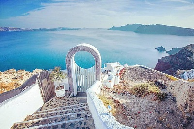
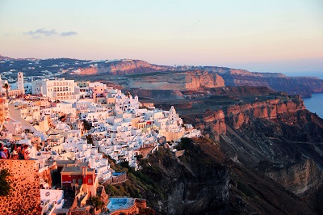
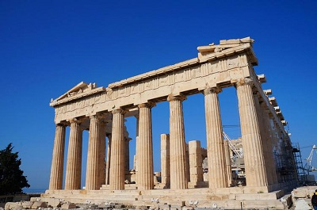
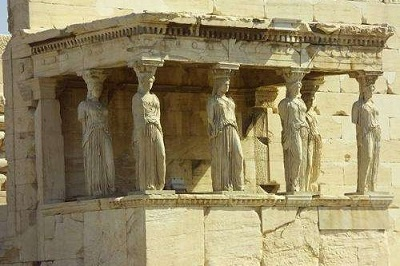
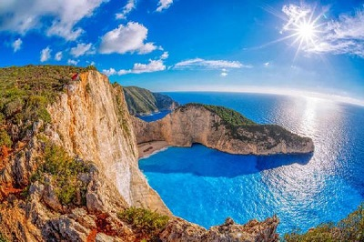
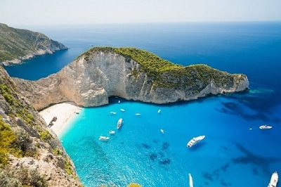
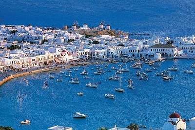
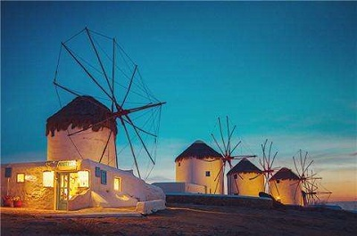

morly旅游网
希腊共和国（希腊语：Ελληνική Δημοκρατία），简称希腊（希腊语：Ελλάδα），是地处欧洲东南角、巴尔干半岛的南端的共和制国家。全国由半岛南部的伯罗奔尼撒半岛和爱琴海中的3000余座岛屿共同构成。希腊为连接欧亚非的战略要地，本土从西北至正北部分别邻阿尔巴尼亚、马其顿、保加利亚三国，东北与土耳其国境接壤。周围则自东而西分别濒临爱琴海、地中海本域与伊奥尼亚海。
希腊的历史可一直上溯到古希腊文明，被视为西方文明的发源地。公元前3000年~前1100年克里特岛曾出现米诺斯文明，公元前1600年~前1050年伯罗奔尼撒半岛出现迈锡尼文明. 公元前800年形成奴隶制城邦国家，前5世纪发展到鼎盛时期。
希腊还是西方哲学、奥林匹克运动会、西方文学、历史学、政治科学、民主制度、科学和数学原理，以及西方戏剧的发源地。希腊的文化与技术进步对世界历史曾具有极大的影响力，通过亚历山大大帝和罗马帝国传播至东方世界和西方世界。
希腊是一个发达的资本主义国家，也是欧盟和北约的成员国，而且还是巴尔干地区最大的经济体。其海运业，旅游、侨汇并列为外汇收入三大支柱。且农业发达，工业主要以食品加工和轻工业为主。希腊2016年人均国内生产总值因经济危机仅为欧盟平均水平的67%。
圣托里尼
圣托里尼岛（又称锡拉）位于爱琴海，在希腊大陆东南方向约200km处，这里有典型的爱琴海风光：阳光、沙滩、大海、蓝天、白房子，是人们梦想中的蜜月度假胜地。圣托里尼岛由三个小岛组成，其中两个岛有人居住，大的叫锡拉岛，小的叫锡拉夏岛，中间的一个岛是沉睡的火山岛尼亚卡梅尼。景点集中在锡拉岛，游客多在此。
 雅典
雅典是希腊首都，同样也是希腊最大的城市，位于巴尔干半岛南端，三面山一面海，属亚热带地中海气候。雅典是世界上最古老的城市之一，有记载的历史长达3000多年，历史遗迹年代久远，意义非凡。希腊的博物馆是世界闻名的，在雅典就有20多个，有的建在遗址旁边展示发掘出来的文物，有的集中展示贵重文物，对于游客来说这里就是个巨大的古文化博物馆。
 扎金索斯
扎金索斯岛位于希腊的西部，靠近意大利，属于爱奥尼亚海。这里的中国游客不多，岛屿也相对幽静，岛上地形多样，拥有旖旎多姿的壮美海滩：东南部的沙滩隐蔽在深曲海湾中，海水深蓝静谧；而西岸则是悬崖陡立，另一番有趣的水下世界。此外，岛上生长着超过7,000种花，因此岛屿又被称为“东方之花”
 米克诺斯
米科诺斯是希腊爱琴海上的一个小岛，是基克拉泽斯群岛之一，位于提诺斯、锡罗斯岛、帕罗斯岛和纳克索斯岛之间。镇上街道纵横，一排排房子都漆成了白色，满载鲜花的木质阳台遍布全镇。夏季是其黄金时光，游人纷至沓来，在镇上的酒吧小饮一杯或是品尝鲜美的海鲜，并饱览这里的美丽风光。
 内容整理至网络，如有侵权，请联系我们！1255394075@qq.com